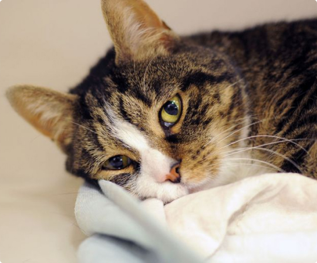
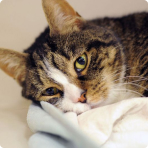

Леся
Возраст: 4 года
Пол: Женский
Окрас: Серый
Как оказалось, в маленькой глазастой девочке скрыто столько энергии и любопытства, что хватит на несколько хвостатых.
Леся готова быть всегда и везде. В играх, дурашливых бегалках с другими котейками – маленький моторчик работает всегда и при любых обстоятельствах.